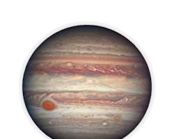

🌪️ O gigante Júpiter e sua tempestade eterna
✍️ Por: Seu Nome
Júpiter é o maior planeta do Sistema Solar! 😱 A famosa "Grande Mancha Vermelha" no planeta é, na verdade, uma tempestade gigante que dura há mais de 300 anos e é maior que a própria Terra! 🌍